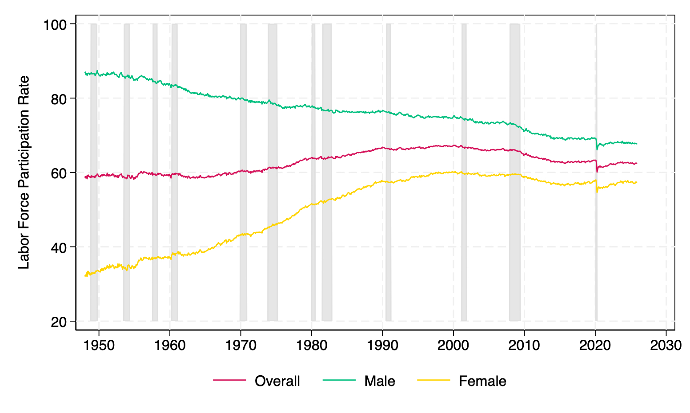
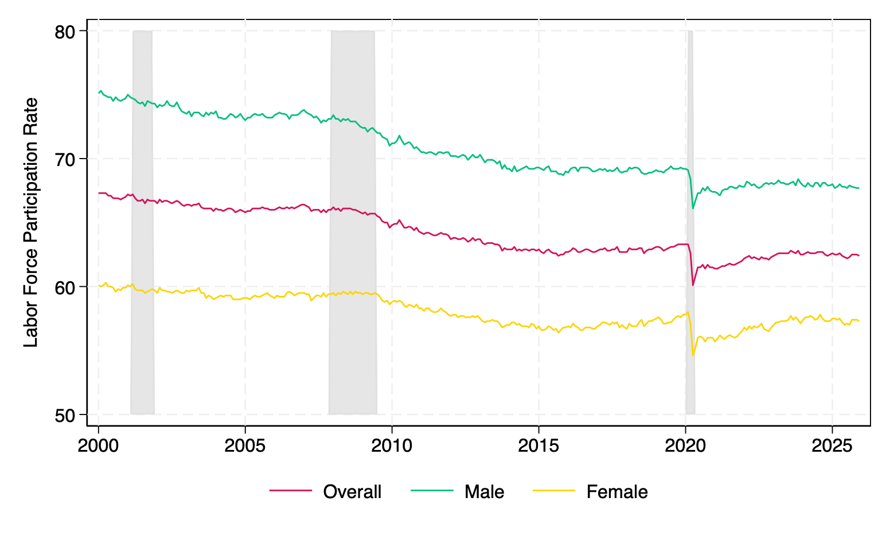
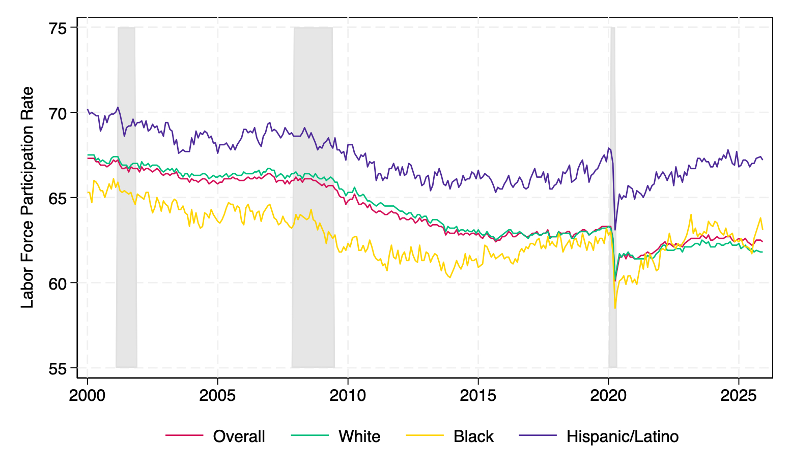
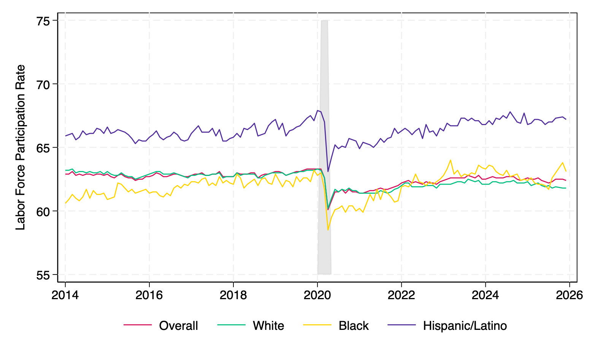

Subodh Pandey
The Labor force participation rate (LFPR) refers to the number of people in the labor force as a percentage of the working-age civilian noninstitutional population. Civilian labor force is a term used by the United States Bureau of Labor Statistics (BLS) to describe the subsets of the American population that are: 1) at least 16 years old 2) not serving in the military and 3) not institutionalized (e.g., not in penal facilities, mental facilities, and elder-care institutions). The LFPR is estimated by the BLS from the responses to the Current Population Survey.
The LFPR is calculated using the following formula:
The study of the LFPR trend is important due to several reasons. The civilian non institutional population of the United States in 2025 was approximately 273 million. The movement in 1 percentage points LFPR involves a change in the labor market status of 2.73 million people. It also represents the relative size of the labor force that is available in the production of the Nation's good and services (Mosisa & Hipple, 2006)
Macroeconomists use LFPR as an initial economic indicator of current market trends and to understand the overall health of the economy, particularly in the long run. The increase in the labor force growth is associated with faster GDP growth, and vice versa. However, long-run changes may not always reflect the health of the economy. For example, demographic changes such as an aging population or the choice of individuals to attend college rather than work may lead to more exits from the labor force, causing a shrinking of the labor force and thus decreasing the LFPR.
While looking at the historical trend, the LFPR followed an upward trend for several decades since data collection started in 1948, reaching a peak of 67.3% in early 2000 and started declining. Perez-Arce and Prados (2021) attributed this decline to technological innovations and changes in the social programs after the financial crisis of 2007. The other possible reasons include retirement of the baby boomers, increase in social security benefits, changes in private insurance provided by the employer, and increased school enrollment among the younger population (Krueger, 2017; Mosisa & Hipple, 2006).


The LFPR has changed by gender centering around evolving societal norms and roles (Fu, 2025). Historically, women experienced a notable increase in LFPR, particularly from the 1950s to the 1990s, while men experienced a decline in LFPR during the same period. However, since the early 2000s, the LFPR for both men and women has been declining parallelly. Although, men have a higher LFPR than women, the gap has narrowed over time, from 54.7 percentage points in January 1948 to 10.4 percentage points in December 2025.
The LFPR of men has been persistently higher than that of women since data collection started. From January 1948 onward, it fell by 19 points among men and grew by 25.3 points among women by December 2025. Between 2000 January and 2025 December, it fell by 7.4 points among men and grew by 2.8 points among women (Figure 1 and 2).
The increase in the LFPR for women can be caused by several factors, such as the feminist movement, an increase in post marriage work culture, declining fertility rates, delayed marriage, high divorce rates, increased access to education and employment opportunities, increasing acceptance of women in the labor market, increased demand for women in service sector, development of labor saving household technology, changes in spousal income, and the implementation of policies that support work-life balance (Greenwood et al., 2005; Juhn & Potter, 2006;Killingsworth & Heckman, 1986; Salamaliki & Venetis, 2014).
On the other hand, the decline in the LFPR for men are linked to several factors, such as the steep reduction in the participation of older men due to retirement and early retirement plans, decline in demand for less skilled workers, decline in manufacturing jobs, increased educational enrollment, and the changes in societal norms around gender roles (Juhn & Potter, 2006; Murphy & Topel, 1997; Salamaliki & Venetis, 2014).
The effects of economic downturns on the LFPR are also prominent by gender. During the COVID-19 pandemic, the LFPR for women dropped more significantly than men. This may be more likely because gendered work, more closely linked with women, such as, healthcare, hospitality, schooling, and retail were more severely affected by the pandemic. Also, the need for more homebound caregiving responsibilities disproportionately affected women due to the closure of childcare and in-person schooling, led to a further decline in LFPR (Aaronson & Alba, 2021; Albanesi & Kim, 2021).


There is also a differential trend by race and ethnicity. Historically, the LFPR for White workers has been higher than that of Black workers and LFPR for the Hispanic/Latino workers is higher than White and Black workers (Figure 3 and 4). The gap between these workers has remained relatively stable. The lower LFPR for Black workers may be caused by various factors including the nature of job, high discouragement, and more exits from the labor force (Cajner et al., 2017; U.S. Bureau of Labor Statistics, 2023). The higher LFPR for Hispanic/Latino workers may be attributed to migration, necessity driven participation, and more people in the prime working age (U.S. Bureau of Labor Statistics, 2016).
The LFPR is procyclical - it increases during economic expansions and decreases during recessions. More individuals join the labor force when the jobs are plentiful and leave in response to the fewer job opportunities (Mosisa & Hipple, 2006). This overall reduced participation rate for all races during COVID-19 has been linked to several factors, such as dependent care demands, increased unemployment benefits, people afraid of getting sick from COVID-19, and work-life balance preferences (Goda & Soltas, 2023; KPMG, 2025).
There is also differentiated effects of market shocks (COVID-19 and the Great Recession) on the LFPR by race. The reduction effects are higher in Black (4.5%) and Hispanic (4.7%) as compared to White workers (3%). The possible reasons includes being an essential worker, the type of work performed, workplace factors, and geographical factors (Jason et al., 2024).
While evaluating the effects during the Great Recession, there was a steady decrease in the LFPR, which continued after 2000, and decreased even further after the recession. Unlike COVID-19, where millions "dropped out" due to health fears or lockdowns, the Great Recession saw a more gradual exit from the labor force as discouraged workers stopped looking for jobs over several years Kochhar, 2014; U.S. Bureau of Labor Statistics, 2019).
Thus, the LFPR is an important economic indicator that reflects the health of the labor market and the economy. It has been influenced by various factors such as demographic changes, societal norms, economic conditions, and policy changes. The trends in LFPR by gender and race highlight the disparities in labor market participation and requires preparations for the next economic downturns depending on the type of shock. Understanding the consequences of these shocks may help to mitigate their impact on the labor market in future.